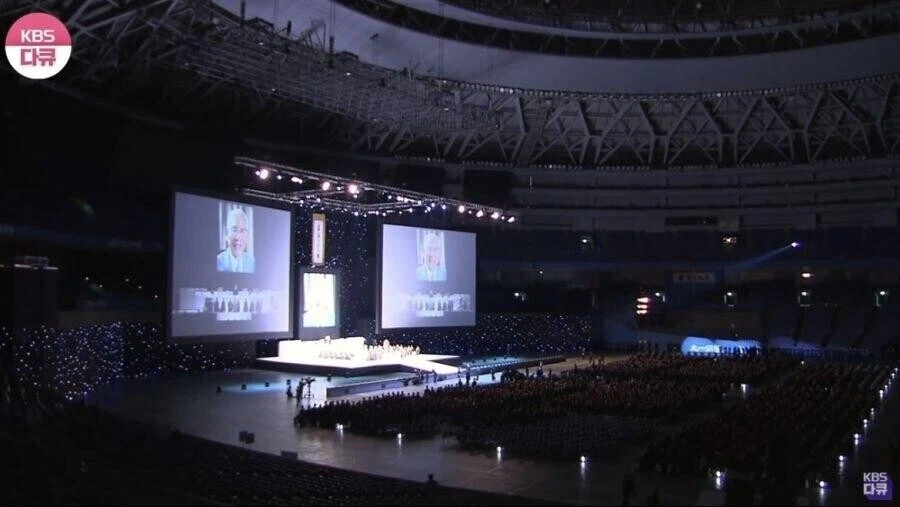
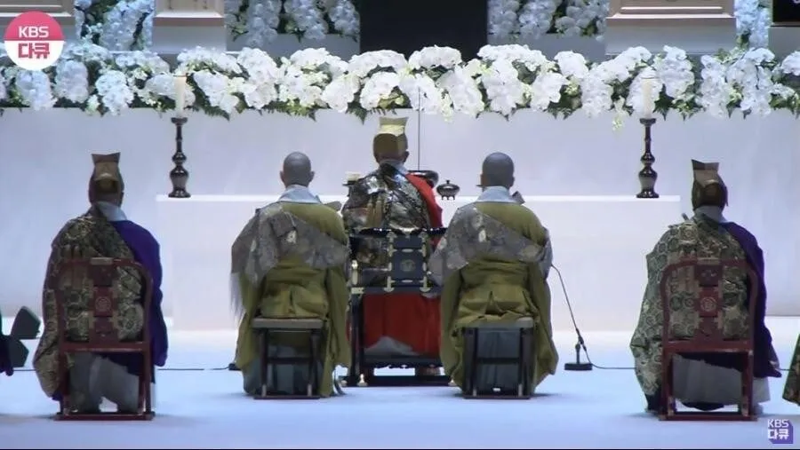
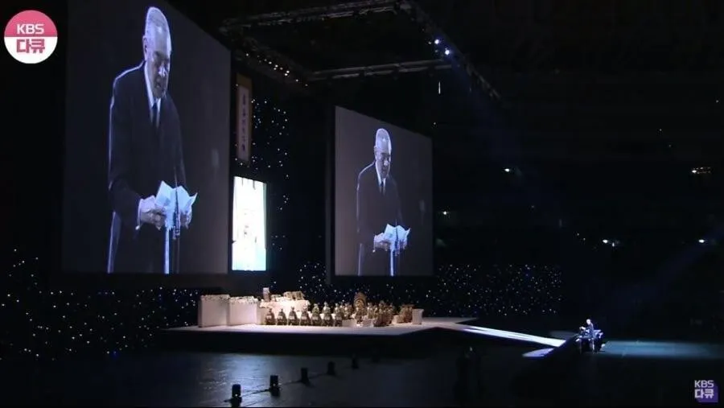
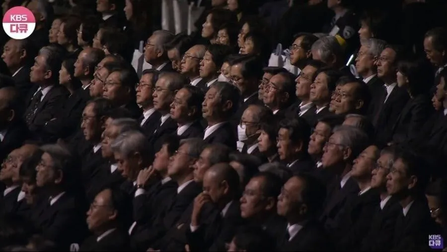
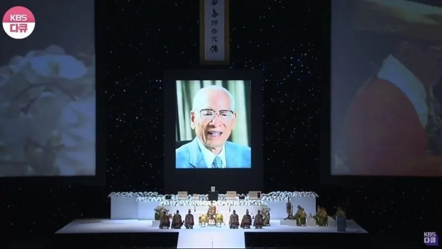

교세라 돔 오사카(구 오사카돔)을 통째로 빌려 진행됨

행사는 전통 불교식으로


전 총리 다수를 비롯해 정재계의 주요 인사 6500여명이 참여함
대체 누구의 추모제길래?

안도 모모후쿠 (1910~2007)
인스턴트 라면 개발자

교세라 돔 오사카(구 오사카돔)을 통째로 빌려 진행됨

행사는 전통 불교식으로


전 총리 다수를 비롯해 정재계의 주요 인사 6500여명이 참여함
대체 누구의 추모제길래?

안도 모모후쿠 (1910~2007)
인스턴트 라면 개발자
그와중에 아베는 또 불참
아베는 그쪽(?)에서 다이렉트로 하지(?)
사람이 죽으면 먼저 가있던 아베가 마중나온다는 얘기가 있다. 나는 이 이야기를 무척 좋아한다.
직접 만났대
대만인이잖아 ㅋㅋㅋㅋㅋ
일본 라면은 애초에 중화면 이라고 붙어있음 일종의 한국 짜장면 같은거 첨 들여오고 만든사람은 중국사람이겠지만 어짜피 지금 짜장면은 중국사람들도 한국꺼라함 라면도 일본에겐 마찬가지
대만 출신이긴 한데 중화민국 국적을 가졌던 적은 없긴 함
화교일 뿐
중간보지를 개발한 그분
이건 인정이지
위인이시지
식량난해결이랑 타국에 기술공유해준 산업기여 같은거로 위인전 실려도 될듯
님이 아니였음 어찌 잔업을 하겠습니까 찬양합니다 컵라면의 창조주여
저런 닛신 라면을 현재 위기감 주고있는 불닭은 도대체 ㄷㄷ
라면선인 ㄷㄷ
인스턴트 라면의 개발자면 그럴만하네
그는 신이야
위인이지
귀인이시다 정중히 모셔라
저양반덕분에 값싸게 라면먹고버틸수있는 사람들이 전세계 몇명이나있었을까
요코하마에 저사람 박물관있는데 입장료 아깝던데 ㅋㅋㅋㅋ
와..저런분은 진짜 위인이지..
아베는 오구리 캡(말)이 아베보다 객이 많았댔나
오우 저 분은 위인 맞다
이분은 인정해야한다 오늘도 많은사람들에 생명을 이어주고 있는 위인이시다
위인 ㅇㅈ
삼양에 기술 판매 거절한 사람
아니 그렇게 말하시면 안 되고...
동아시아의 식량 갈증을 어느정도 해소해주신분...
goat
막짤에 세토 칸나 영상짤을 합성하면 개연성 Up